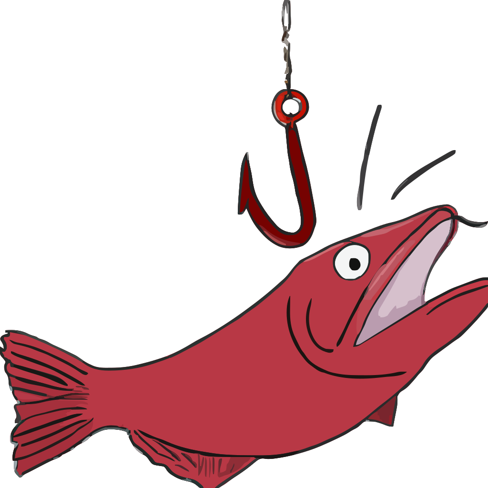

redherringAdd an indicator to your browser when hovering over anchor elements to point out the uri characters that are not ascii letters. Top level domain is always colored orange to bring attention to it, and only the https protocol is considered valid. Create a whitelist by adding the 'domain.tld' entries on separate lines to the textbox in the 'Whitelist' tab.